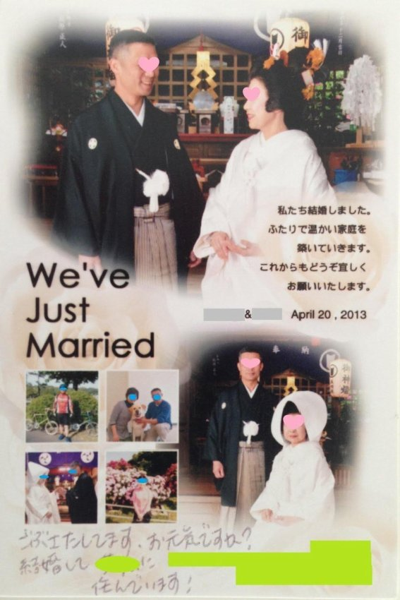

| ４２歳のシンデレラ: 仕事も結婚も『たった一つのあること』を変えるだけですべてが上手くいく！ | |
| 佐瑠女 まき | |
| DBpublishing (2014) | |
仕事と結婚。
どちらも手に入れて、どちらも上手くいくって本当？
...と思っている『あなた』へ。
実は、仕事と結婚って、
どちらも手に入れることができて、どちらも上手くいきます。
というか、本当は、
どちらか片方だけが、上手くいくことはありません。
もし、片方だけしか、上手くいってないのであれば、
それは、まだ、あなた自身に、『あること』を変える、
改善の余地があるということです。
そして、それを改善し、変えていけば、
どちらも上手くいくようになるのです。
それだけでなく、
人間関係をはじめ、あらゆることが上手くいく、
人生において波に乗るのも、
実は、『たった一つのあること』を変えていけば、
それはすべて上手くいくのです。
もちろん、年齢や条件、性別など、関係ありません。
実際、私が、
パーソナルジュエリストとして、１０年間
関わらせていただいたクライアントさんの中には、
４０歳を過ぎた方でも、仕事と結婚のどちらも手に入れた方は、
数多くいらっしゃいます。
本当にそんなことあるの?
...そう思うかもしれません。
この本は、
実際に私が関わらせていただいた、
４２歳女性の実例ストーリーです。
(実話ですが、プライバシーの関係上、名前など、少し設定を変えて、ストーリーにしています)
なぜ、主人公である、森 美夏(もり みか)さんが、
仕事と結婚の両方を手に入れることができたのか？
推理をしながら、読み進めてください。
仕事も結婚もうまくいくだけでなく、
人生のすべてが上手くいく
『たった一つのあること』とは何か？
客観的に読み解こうとする力が、
あなたの人生を、自ら変えていく、大きな力になっていきます。
あなたが、美夏さんのように、
仕事と結婚の両方を、手に入れることができますように。
愛と光と感謝をこめて・・・
パーソナルジュエリスト 佐瑠女(さるめ) まき
仕事も結婚も上手くいくだけでなく、
人間関係や、人生の波に乗り、
あらゆることが上手くいくようになる
『たった一つのあること』を、
心理学にもとづいて、解説し、
さらに、あなたにも実践できるよう、
具体的な実践法をプレゼントします。
頭では分かっても、実践できない。
知識としては分かったけれど、
実際に自分がどう実践すればいいのか？
分からない。ということはよくあるものです。
プレゼントをご希望の方は、下記のURLに、
お名前とメールアドレスをご登録ください。
http://id-kirakiramail.com/neo/usrctrl.php?mag_id=16
自動返信にて、PDFファイルをお送りします。
実践法を使って、『たった一つのあること』を変えて、
この本の主人公である、森 美夏さんのように、
仕事と結婚、どちらも手に入れてください。
次のシンデレラは、『あなた』です！
あれは、忘れもしない日。
１０月のとある金曜日。
その日は、午後から全体会議だった。
業務課の大石課長も、女性の谷口リーダーも不在で、
同じく業務で働いている
若手女子社員の中島さっちゃんと、派遣の私だけが、
ぽつりと仕事をしていた日。
珍しく、電話が一本もかかってこない、静かな一日だった。
時刻は、４時４５分。
そろそろ、仕事のめどをつけようと
パソコン入力のピッチを、少しあげたときだった。
谷口リーダーが、会議から帰ってきた。
そして、私の方を見るなり、こう言った。
『森さん、大石課長が、会議室に来るように。 ...って。』
美夏は、ピッチをあげた手を止めて、顔をあげた。
谷口リーダーは、
美夏の後ろを通り過ぎ、自分のデスクについた。
そして、すぐさまパソコンの電源を入れ、
続けて言った。
『森さん、今から支度して、会議室で話をしたら、きっと５時すぎると思うの。
今から、帰りの支度をして、会議室に行って、そのまま帰っていいですから。』
『...あ、はい。分かりました。』
美夏は、谷口リーダーに返事をした。
谷口リーダーは、会議で中断していた、仕事の遅れを取り戻そうと、
カチカチと、パソコン入力を始めた。
帰り支度をした美夏は、谷口リーダーのデスクの前に立ち、
『では、今から、会議室に行ったあと、そのまま、帰ります。
お疲れ様でした。明日もよろしくお願いします。』と、
軽く会釈をしながら、挨拶をした。
谷口リーダーは、パソコン入力の手を休め、
『今日も一日、お疲れ様でした。ありがとうございました。』と、
丁寧にあいさつした。
そして、いつもより、ほんのちょっとだけ、長い会釈をしてくださった。
トントン。
美夏は、会議室の扉を軽くノックした。
『大石課長、森です。』
すると、中から、
『どうぞ、入りなさい。』と、声がした。
大石課長の、聞きなれた、落ち着いたトーンの、優しい声がした。
『...失礼します。』
私は、会議室に入り、静かに扉を閉めた。
大石課長は、入口に背を向けて、窓際に立っていた。
窓の外は、いつになく強い風が吹いていた。
強い風が吹くたび、
街路樹のイチョウの葉が、パラパラと舞い落ちていった。
大石課長は、美夏に背中を向けたまま、しばらく黙っていた。
『...、あの、、、、。。。』
美夏が、恐る恐る言いかけると、大石課長が口を開いた。
『森さん。確か、うちの会社に来て、５年になるんだよね。
...時の経つのは早いな。
君が派遣社員だってこと、すっかり忘れるくらい、
君にはよく働いてもらったよ。
本当に、ありがとう。
そして... 』
大石課長の言葉が、一瞬、止まった。
『...来年の派遣の契約なんだけど、
今日の全体会議で、業務での派遣社員の登用は、今期まで。
更新はないと、決まったよ。』
大石課長は、背中を向けたまま、続けて、こう言った。
『...ということで、森さん、申し訳ないが、
来年３月末で、派遣の任期満了ということになった。』
窓の外に、ひときわ強い風が吹いた。
イチョウの葉が、突風にあおられ、一気に、枝から剥がされた。
『森さんには、派遣でありながら、正社員、
いや、それ以上によく働いてもらっていたのに...
...申し訳ない。
本当に、申し訳ない。』
大石課長は、ゆっくりと振り返り、
美夏に近寄り、深い深いお辞儀をした。
美夏には、大石課長のお辞儀の向こうに、
自分のために全力を尽くしてくれた、課長の姿が見えた。
『課長、了解しました。
では、来年３月までの半年間、精一杯がんばりますので、
どうぞよろしくお願いします。』
美夏は、そう言って、２つ折りになりそうなくらい、
深々とお辞儀した。
私は、派遣社員。
いつか契約が終わることは、分かっていた。
もともとは、３年契約だった仕事。
本当なら、２年前に、この日が来ているはずだった。
このご時世、契約満了を延長して、
２年も更新してくれたって、逆にありがたい。
しかも、こうして、じきじきに課長から通達してもらい、
こうして、頭まで下げてもらっている。
本当に、ありがたい。
本当に、本当に、ありがたい。
...だけど。。。
金曜日に吹き荒れていた強風は、週末も止むことがなかった。
月曜日。定時に出勤。
週末とはうって変わって、風もなく、おだやかな、晴れた朝だった。
ここ数日の風で、会社前のイチョウ並木は、すっかり枝だけになっていた。
すかすかの枝に、すかすかの青空が広がっていた。
定時に朝礼が終了。
美夏は、いつものように机に座り、いつものように仕事を始めた。
大石課長も、谷口リーダーも、中島さっちゃんも、
みんなみんな、いつもと同じだった。
いつもと同じ月曜日が始まった。
そして、１２時になった。
社内は、営業全員が出はらって、がらんとしていた。
美夏は、営業部のデスクの片隅で、
若手女子社員の中島さっちゃんと、
いつものように、自作のお弁当を食べていた。
中島さっちゃんは、
ダイエット中らしく、プチトマトや、レタスやキュウリなど、
たくさんの生野菜を入れた彩り鮮やかで、可愛らしい
小さなお弁当を食べていた。
お弁当を食べ終わり、
中島さっちゃんが、コーヒーを入れて持ってきてくれた。
『さっちゃん、ありがとう。
さっちゃんが入れてくれたコーヒーは、本当に美味しいんだよねー。』
美夏は、さっちゃんが持ってきてくれたカップを、受け取りながら言った。
『ありがとうございます。森さんにそう言ってもらえると、
私、嬉しいな。
私は、コーヒーくらいしか、美味しく入れられないけれど、
森さんは、すごい料理上手じゃないですか。
ほら、今日のお弁当も、綺麗に巻いた卵焼きとか、
きんぴらとか作ってて、
森さんのこと、職場の先輩としてだけじゃなく、
女性として、むちゃくちゃ、尊敬してるんです。
そのうち、私にも素敵な彼ができたら、
森さんみたいに、
お弁当くらい、ちゃちゃっと作れる女に、なりたいです。
そのときは、森さん、料理、絶対、ぜぇったい、教えてくださいね♪』
中島さっちゃんは、にこっと笑いながら、私にそう言った。
さっちゃんは、キティちゃんのマグカップを両手で抱えて、
フーフーと、コーヒーをさましながら、ゆっくり飲んでいた。
カップを抱えた、さっちゃんの爪は、月替わりで、いつもキレイ。そして可愛い。
１０月は、ピンクのグラデーションに、
濃いピンクのスワロフスキーのラインストーンが付いている。
蛍光灯の光がラインストーンに反射して、キラリと光った。
『さっちゃん、ありがとう。卵焼きとか、きんぴらとか、
その程度の料理でいいなら、いつでも教えるよ。』
美夏は、中島さっちゃんに言った。
そして...
心の中では、こんな言葉を続けた。
『来年の３月までなら、いつでも教えられるよ。
でも、それ以降は...
...会社で会えなくなるから、簡単には、教えられくなるけど。』
美夏は、心の言葉を飲み込むように、
コーヒーを一口、ゴクリと飲み込んだ。
『ダッテ、ワタシハ、ズット、ココニ、イタクテモ、
ライネンノ、３ガツマデシカ、コノカイシャニハ、イラレナイカラ。
ダッテ、ワタシハ、ハケンダカラ。』
美夏は、５年間、使っていた
自分用のコーヒーカップに、
あと何回コーヒーを入れるのかな、と、
ふと、思った。
そして金曜日。
いつものように一週間が終わろうとしていた。
本当に、何一つ変わらない一週間だった。
本当に、何一つ、変わらなかった。
美夏は、ふと、時計を見上げた。
時刻は、４時４５分。
ほらね。
時計を見上げる時間も、いつもと同じ。
美夏がこの会社で、５年で作り上げた、無意識の時間のリズム。
それは、派遣として、時間で区切られて働いてきた、
長年の時間の感覚、時間のリズムでもあった。
５時きっかりに、机まわりを片付け、
大石課長、谷口リーダー、中島さっちゃんにあいさつを済ませて、
そうそうに会社を出た。
こんなとき、派遣はラクだ。
急な残業もない。時間きっかりで、動くことができる。
妙な遠慮も、しなくていい。
だって、派遣だもの。時間単位で、きっちり働く。
めったなことでは、残業はない。正社員とは、違うのだ。
美夏は、家とは反対方向の地下鉄に乗り、
会社から、一駅先の駅で降りた。
そう、今日は、一か月前から、
高校時代からの友達である、恵美子の誕生日祝いをする約束を
していたのだ。
恵美子は、美夏とは違い、キャリア志向な女性。
途中、ヘッドハントされて、大手企業に転職。
今は、そこで企画の仕事をしている。
部下も２０人くらいひきつれて、けっこう大きなプロジェクトを任されている。
まさに、敏腕の女性管理職。恰好いい。
恵美子は、１０年くらい前に、取引先の人と結婚して、仕事も家庭も両立していた。
子供はいなかったけど、夫婦仲も良くて、まさに、順風満帆な人生。
どうやったら、あんなふうに、仕事も結婚も、両立できるんだろう。
美夏にとっては、同級生の友達でありながら、憧れの女性でもあった。
美夏は、駅を出て、大きなマンションが並び立つ住宅街を抜け、
約束していたイタリアンレストラン、ゴッティに着いた。
ゴッティは、カジュアルなイタリアの田舎風のレストラン。
イタリアで修業してきたオーナーがやっている、とっても親しみやすいレストラン。
ピザ窯もあって、焼き立てのピッツァが気軽に楽しめる。
店内の壁は、ライトブラウンのレンガと、白い壁がバランスよく、配置されていた。
やわらかな灯りが、レンガの凹凸に当たり、やわらかな影をつくりだしている。
オーナーの人柄が、そこかしこに見え隠れする、あたたかいレストランだった。
シックなオリーヴグリーンと、サーモンピンクのペーパーナプキンが
テーブルにすでにセットされている。
さりげなくお洒落で、居心地のいいレストランだ。
恵美子は、すでに来ていて、一番奥の席に座っていた。
スマホでメールか何かをチェックしていた。
『ごめん、待った?』
恵美子にそう言いながら、ベージュのコートを脱ぎ、
スタッフにコートを預けて着席した。
恵美子は、チェックしていたスマホをテーブルに置いた。
『美夏、久しぶり～。私も、今、来たとこだから、大丈夫♪』
恵美子は、相変わらず明るくて、人なつっこい笑顔で答えた。
『恵美子、お誕生日、おめでとう～』
『かんぱ～い』
二人は、いい感じに冷えたビールで乾杯した。
パルマ産の生ハムや、サラダ、ほうれん草とモッツァレラチーズの
イタリア風キッシュなどがテーブルに並んだ。
２人は、たわいない話をつまみに、笑顔を交えながら、料理をつついた。
２人は、1杯目のビールを飲み干したあと、赤ワインに変えた。
『かんぱ～い』
２人は、あらためて乾杯した。
２人のグラスが響きあい、チンッと、乾いた高い音が、かすかに鳴った。
『...で、最近、仕事の方は、どう？』
あらためて恵美子が、美夏に言った。
『...え、し、仕事ぉ?
うん、相変わらず...な感じ。』
美夏は、ワインを一口、飲んだ。
グラスをテーブルに置こうとした次の瞬間、
グラスを持っていた右手が、ふらつき、
グラスを、お皿にカチャリとぶつけた。
『...おっと。』
美夏は、自分でも予想外のことで、ちょっと驚いた。
『美夏、大丈夫? さっきから、今日の美夏はなんか違うって、
ちょっと気になってたんだけど、
...もしかして、美夏、仕事でなんかあったんじゃない?』
恵美子は、いぶかしげに美夏の顔を覗き込んだ。
...さすが、恵美子、
部下を何十人も面倒見ている、凄腕の女性管理職。
人の変化を察知するのが早い。
美夏は、恵美子に隠し事はできないと思った。
『...そうだったんだ。』
恵美子は、うなずきながら、２杯目の赤ワインが入ったグラスを
ゆっくりとテーブルに置いた。
『うん。そうなの。』
美夏は、恵美子のグラスをぼんやりと見ながら、言った。
美夏は、派遣の契約が切れることを、恵美子に言い終わると、
ふっと、われに返ったように、目線をあげ、恵美子の瞳をしっかりと見た。
美夏は、恵美子に一部始終を話すことができて、ちょっとだけ、すっきりしていた。
『...で、４月以降は、どうするの?』
美夏とは反対に、恵美子の顔が曇っていった。
『また、派遣探すの? それとも、どこか就職するつもり?』
恵美子は、さらに美夏に顔を近づけた。
美夏は、恵美子が顔を近づけたぶん、後ろに顔を遠ざけながら言った。
『いや、まだ、先週の金曜日に、話があったばかりで、
とりあえず、派遣会社に連絡して、報告しただけで、
まだ、何もやってないの。』
『そっか、そうだよね。一週間だもんね。そんなもんだよね。そっかそっか。』
恵美子は、近づけた顔を元に戻した。
『でもさ、美夏も私と同い年、４２歳じゃない?
４２歳で、これから職探しって、結構、いや、相当大変だよ。
もし、４月以降、決まらなかったら、しばらく無職でもやってけるの?』
恵美子は、心配そうに、美夏を見つめた。
そして、恵美子は言葉を続けた。
『美夏って、なんか、手に職とか、資格とか、持ってたっけ?
他に、親戚とか、顔が利きそうな知り合いとか、コネとか、ある?』
美夏は、首を横に振りながら言った。
『ううん、それがね、ないの。なんにもないの。
特技も、才能も、資格も、貯金も、なんにもない。
ましてや、コネなんて...』
美夏は、言葉をつまらせた。
『そっか、そうだよね。。。
...そうすると、派遣が切れる、半年がリミットか。
半年の間に、なんとかしなきゃ、ね。
...はんとし、半年かぁ。。。
この時期って、雇用、あるのかな～?
この前、ウチで採用した子も、３５歳で、応募するとこすらなくて、
年の数だけ、面接受けましたぁ～とか、冗談まじりに、言ってたんだよね。
あれ、ウチでようやく決まったから、笑って話してくれたけど、
３４回も落ちまくったことを、リアルに考えたら...、
なんだかなぁって思うよね。
けっこうキャリア積んでた、その子でさえ、それだから、
美夏の場合は、もう少し、覚悟しないといけないかもよ。
かりに、年の数だと思って、４２回...いや、５０回、
もしかしたら、１００回くらい、面接受けるつもりで、
覚悟しておいた方がいいかもよ。』
恵美子は、真顔で、そう言った。
『うん、分かってる。分かってるよ。
そうだよね、年の数、いや１００回くらいダメもとで受けるつもり。
そのくらいのつもりで、考えていないとね。』
いつも楽天的に物事を考える恵美子が、
真顔で、こんな話をすることは、美夏にはちょっと意外だった。
美夏は、持っていたフォークを置いて、食べるのをやめた。
いつもの恵美子なら、ぽんっと、美夏の肩をたたいて、
『大丈夫、だいじょうぶ。なんとかなるって。大丈夫だよ』と、
笑顔で、返事をしてくれた。
美夏には、もしかして、自分は、想像もつかない、大変な事態に
なってるのかもしれないと、このとき、初めて思った。
恵美子は、腕組みをして、しばらく黙っていた。
美夏の心に、暗い影がよぎった。
『お待たせしました。マルゲリータのピッツアです。』
美夏の心の影を払うかのように、
人懐っこい笑顔のオーナーが、じきじきに、焼き立てのピッツァを運んできてくれた。
ピッツァの美味しそうな香りが、二人の緊張をほどいた。
『わぁ。ピッツァ、美味しそう。まずは、コレ、食べよう。』
恵美子の表情が、いつもの顔になっていた。
ピッツァをお皿に運びながら、恵美子は言った。
『分かった。深刻に考えても、仕方ないよね。とにかく、どこか、いいとこないか?
私の方でも、あたってみるよ。
...でも、あんまり、期待しないでね。』
美夏には、そんなふうに、自分のことを親身になって考えてくれる
恵美子の存在が、とても、ありがたかった。
私って、人には恵まれてる。美夏は、胸が熱くなった。
『恵美子、ありがとう。』
それから数週間が経った。
結局、何のすべもなく、１１月に入った。
月初の全体会議で、課長もリーダーもいなくて、
オフィスには、私と、中島さっちゃんの２人だけが残っていた。
ぽつんと、向かい合わせで、お互い、黙って仕事をしていた。
たて続けに２つ３つと、電話が鳴り、
応対したあと、ピタリと電話が止んだ。
５分くらい、静寂が続いた。
『森さん、あのぉ～、
ちょっと気になったことがあるんですけど』
静寂の中、中島さっちゃんが、そうっと話しかけてきた。
『...何?』
美夏は、伝票をパソコン入力しながら、返事をした。
『あのぉ～、先週、大石課長に言われて、
森さんがやってらっしゃる仕事で、
私の仕事と統合できるところは統合して、
私の方で一括管理できるシステムを、
来年の４月までに考えておくようにって、言われたんです。』
『...で、森さん、それって、ど...』
プルルルルルル...
１本の電話が、鳴った。
『お電話、ありがとうございます。トーワカンパニー、中島でございます。』
中島さっちゃんは、すぐに電話を取り、対応を始めた。
ここ数週間、いつもと同じ日々が
いつもと同じように流れていると思っていたけど、
どうやら、私が知らないところで、着々と『何か』が進んでいる。
私がいなくても、会社は、まわっていく。
かりに、突然、今日、私がいなくなったとしても、
混乱するのは、どんなに長くても、いいとこ２、３日。
派遣社員の１人がいなくなったって、会社は、びくともしない。
派遣なんて、所詮、そんなもんだ。
美夏は、ふっと、息をついた。
『...はい、了解しました。 失礼致します。』
中島さっちゃんが、ゆっくりと電話を切った。
そして、もとの静かなオフィスに戻った。
美夏は、ひとつ、深呼吸をして
中島さっちゃんに、話しかけた。
『さっちゃん、
私ね、実は、来年の３月で、この会社との契約が切れるの。
だから、私は、来年の３月までしか、会社には来ないの。
先日、４月以降は、更新はしないって、
大石課長からじきじきに通達があったの。』
美夏は、淡々と話した。
中島さっちゃんは、持っていたボールペンを、ポトリと落とした。
さっちゃんの目と口が、ぽかんと、まるく見開いた。
『...はぁ？ 森さん、今、なんて...？？？』
『私ね、今期で任務終了なの。この会社、来年の３月までなの。』
美夏は、あらためてさっちゃんに言った。
『はっ？ なんですか？ それ。 初耳ですよ、初耳です！
それ、本当なんですかぁ？！ うそっっっ！ そんなの、しんじられないっ！
そんな...、森さんがいなくなるって...、私、考えられないっ！』
中島さっちゃんは、両手を、両ほほにあてて、
ちょっと大げさに、ムンクの叫びみたいなリアクションを
とってみせた。
シャンパンゴールドの秋色のネイルをまとった
さっちゃんの爪が、いっせいに美夏の方を向いた。
さっちゃんは、しばらく固まったまま、動かなかった。
さっちゃんは、しばらそのまま黙ったあと、
ふっと我に返り、オフィスの気配を再度確認してから、
小さな声で、囁いた。
『森さん、それ、決定なんですか？
で、それ、なんとか、どうにかして、やっぱり更新になったり、しないんですかっ？
ほら、営業補佐のシミズさんとか、正社員だけど、
忙しいフリで、ぜんぜん仕事してなくて、
その上、いっつもミスばかりしてて、
正直、みんな、本音は、辞めて欲しいって思ってたりするし、
他にも、ただ会社にいるだけで、仕事してないハッタさんとか、
いてもいなくても、ぶっちゃけ、意味がないノムラさんとか、
ワガママいっぱい言ってて、
仕事のえり好みばかりしている、総務のハヤカワ女史とか、
そういう人達とかに、辞めてもらったりとかして、
代わりに、森さんが、正社員として採用されて、
この会社に残ったり、できないんですか？』
『私、森さんが、この会社に残れるんだったら、なんだって協力しますよ！
だって、私、森さんがいてくれないと、仕事、まわりませんもん！』
美夏は、そんなさっちゃんがいとおしかった。
さっちゃんがこの会社に入ったのは、２年前。
業務のこと、は、美夏が彼女に、ひととおり教えた。
だから、仕事の上では、さっちゃんは、可愛い後輩。
そして、それ以上に私のことを慕ってくれる気持ちが
とても嬉しかった。
『さっちゃん、ありがとう。
でもね、派遣って、それが派遣ってこと。
ハケンって、そういうこと、だよ。
たとえ、正社員より仕事が出来ても、
派遣のために、正社員をクビにすることなんて
無理でしょ、無理無理。
絶対、ムリ。
さっちゃんの気持ちはありがたいよ。
とってもありがたい。
だから、気持ちだけ、いただくね。』
中島さっちゃんは、しばらくそのまま黙っていた。
やがて、さっちゃんの瞳の中の景色が
じんわりと滲んで、一粒、あふれた。
さっちゃんは、シャンパンゴールドの爪で、
その一粒をすくいとり、こう言った。
『森さん、いい人ですよね。本当に、いい人。
私、森さんが大好きだから、
あえて、今日は、言いにくいこと、言っちゃいます。
いい人って、結局、相手にとって、都合のいい人です。
それじゃ、ダメですよ。
すごい年下の私が言うのもなんですけど、
今日は、あえて言わせてください。
森さん、ハケンはある意味、気楽かもしれないけど、
美夏さんみたいに、お仕事できる人は、
いつまでもハケンで、働いてちゃダメですよ。
なんかあったら、しわ寄せ来るの、
真っ先にハケンの人じゃないですか。
森さん、すごく仕事、デキるのに。
ハケンで働くの、もったいないです。
森さん、正社員よりも成果出して、貢献してるのに。
本当は、そこまでしなくてもいいのに。
私、知ってるんですよ。
この前だって、営業補佐のシミズさんのミス、
黙って、リカバリーしてたじゃないですか。
でも、誰も気づいていない。
森さんが、ミスを事前に修正したから、大事に至らなかったのに、
シミズさんときたら、余計なことをしてとか、
いい人ぶってとか、
森さんに、嫌味、言ってたじゃないですか。
私、そーゆーの見てて、すごい、はがゆいんです。
見てて、すごい悔しいんです。
森さん、いいことしてるのに、言われ損じゃないですか。
私、そんな森さんを見てるのが、とっても辛いんです。
森さん、もっと、自分のこと、大事にしてください。
そして、もっと、自分の才能に、気づいてください。
自分の良さを、もっともっと、アピールしてください。
もっと欲張りになって、もっと幸せになってください！』
さっちゃんは、そう言って、
化粧室へと走り去って行った。
オフィスには、美夏が１人、とり残された。
美夏は、家に帰ってテレビをつけた。
テレビには、ちょうど、さっちゃんと同じくらいの女性タレントが、
アップで映っていた。
美夏の脳裏には、今日の、さっちゃんの言葉が
ずっと耳に残っていた。
『森さん、いい人ですよね。本当に、いい人。
私、森さんが大好きだから、あえて言うけど、
いい人って、結局、相手にとって、都合のいい人。
それじゃ、ダメですよ。』
...確かに、さっちゃん言った通り。その通りだと思う。
派遣って、即戦力のスペシャリスト。
カッコいい助っ人みたいなつもりで、
今までやってきたけど、
裏をかえせば、都合のいい人。
会社にとって、都合のいい人。
必要な時に、急に採用されて、
必要じゃなくなったら、即、解雇される。
契約満了というカタチで。
...でもね。
私には、
特技がない。
資格もない、
才能もない。
お金もない、
コネもない。
貯金もなければ、
今は、彼氏もいない。
だから、
今まで、やっとのことで、派遣で食いつないできただけ。
今の会社が、３年のところを、２年更新してくれて、
５年いさせてもらって、ちょっとだけ安定してた。
この会社に５年いることができたのも、
会社がしばらく忙しかったから、
たんに人手が足りなくて、
契約が２年、延長になっただけ。
だから、本当のところ、私の成果とか、
私がよく働いてたからじゃない。
それも、来年の３月でおしまい。
次を探すといったって、
私、４２歳。
しかも、独身。
それが、私。
でも、そんな私でも、
大石課長も、谷口リーダーも、中島さっちゃんも、
私のこと、すごく考えてくれている、
素敵な人達に囲まれている。
恵美子みたいな素敵な友達もいる。
私って、すごく恵まれている。
私って、幸せ者。
だけど。
本当に、それだけで満足してて、いいのかな？
もう少し、夢を見たって、いいのかな？
もう少し、欲張っても、いいのかな？
わたし、もっと幸せになっても、いいのかな？
恵美子の足元にも及ばなくてもいい。
せめて、仕事くらいは、見つけたい。
それって、大それた望みじゃないよね?
私のこと、どこか採用してくれる所、
きっとあるよね?
私、もっと、自分のこと、評価していいのかな?
私の才能って、何なんだろう?
自分をアピールするって、どうすればいいんだろう?
『はじめまして。森 美夏と言います。
今は、派遣をしていて、３月で、契約が切れるので、
これから、就活をしようとしている所です。
これといった特技はないですが、楽しく毎日を送れたらいいなと思っています。
どうぞよろしくお願いします。』
美夏は、フリーペーパーの情報誌、SKIP(スキップ)が主催している
女性向けの交流会に参加していた。
さっちゃんに言われたみたいに、
美夏は、自分の才能や、特技、良さに気付いて、
自分のことを、もっと色んな人に、アピールできるようになりたいと
考えての参加だった。
交流会には、様々な年代の、いろんな職種の女性が参加していた。
美夏の右ななめ前に、パーソナルジュエリストと名乗る、
まきさん。という女性が座っていた。
ひときわ明るく、ケラケラとよく笑う、気さくな女性だった。
まきさんの話によると、なりたい自分のイメージや、
自分はこうありたいという理想像、
そのイメージがぴったり合うジュエリーを選んで、
自分がそれに近づけるように、
コーチングとかも使って、お手伝いをしているらしい。
美夏には、よくわからなかったけれど、
なんだか、とても面白そうだった。
なりたい自分かぁ...
美夏は、想像したこともなかった。
美夏がそんなことを考えていると、
まきさんと、ふと目が合った。
『美夏さん、就活、されていらっしゃるんですよね?
でも、大丈夫。心配しなくていいから。
美夏さんなら、次もすぐ見つかると思います。』
...と、笑顔で言ってくださった。
私は、そんなまきさんの言葉が、素直に嬉しかった。
『ありがとうございます。
そう言っていただけると、ちょっと、嬉しいです。
友達からは、５０回くらい就職試験を受けるのは当たり前。な気持ちで、
気合い入れて探さないと、なかなか見つからないよ。と、
言われたりもしていたので...』
美夏は、即座に、答えた。
すると、
『ああ、そうですよね。このご時世、そんなふうにおっしゃる方、
思ってらっしゃる方って、多いでしょうね。
そして、実際、それは、本当です。半分だけ、本当。
そして、半分は、当たっていません。
美夏さんの場合、なんていうか...
美夏さんからは、悲壮感とか、一切、感じられない。
どう見ても、数か月後、露頭に迷うような、
予兆のような気配が、まったくしないんですよね。
そういう体験をすることで、得ないといけないような、
人生の学びもなさそうだし...』
まきさんは、美夏の全体の気配から、何かを読み取っていきながら、
そう告げた。
美夏は、そんなまきさんの言葉を聞きながら、
心の中に、一本の軸が、すうっと通った。
心強さと、勇気をもらった気がした。
『そうなんです。
私、今の自分の状況って、確かに、不安はあるんです。
でも、その一方で、どこか、なんとかなる。
うまくいくって、思う自分も、いるんです。
じゃ、その根拠はあるのか？って、聞かれたら、
そんなものはないんですけど、
ただ、なんとなく、そんな気がするんです。』
美夏は、正直に、今の自分の心境を伝えた。
まきさんは、大きくうなずいて、こう言った。
『美夏さん、その、どこか、なんか、なんとかなる。うまくいくって気持ちに
意識を向けて、もっとそれを強く感じ続けてください。
きっと、本当にうまくいきますから。』
美夏は、心の中で、
『そうだ。なんとかなる。きっとうまくいく。』と、小さくつぶやいた。
交流会の帰りの夜空に、星が一つ、瞬いた。
交流会に行ってから、
一週間が経った、ある日のことだった。
交流会で左隣りに座っていた、レイコさんからメールがきた。
今度の土曜日、ランチに行きませんか?
そして、そのあと、
ジュエリストの、まきさんのところに、ジュエリーを見に行きたいので、
ついてきてもらえませんか? との、お誘いだった。
私は、すぐにＯＫの返事を送った。
レイコさんにも会いたかったし、まきさんとも会いたかった。
２人は、ランチを楽しんだあと、まきさんのサロンに立ち寄った。
サロンには、まきさんがデザインして制作したリングが、
たくさん置いてあった。
どれも流線型のやわらかい女性的なカーヴや、
渦巻きがあしらわれていて、それぞれ意味が書いてあった。
リングは、宝石がセットされていない状態で置いてあり、
リングの枠とは別に、宝石が１個１個、小さなケースに収められていて、
これもまた、それぞれの宝石の意味が書いてあった。
まきさんは、私とレイコさんにこう質問した。
『美夏さん、レイコさん、なりたい自分像って、ある？
具体的に、はっきりとしたイメージじゃなくてもよくて、
なんとな～く、ぼんやりしててもいいから。
あるいは、「あんなふうになりたいな」と、思う、
将来のモデルになるような、
憧れの女優さんとか、有名人とか。
そして、なりたい自分や、
憧れのモデルとなる人に、
ぴったりなイメージがするジュエリーって、
どれがぴったりなのか？
想像しながら、探してみて。
あるいは、夢や目標がしっかりあって、
その夢や目標に、ピッタリなイメージがするもの、
それが実現したときの自分を、
ちょっと妄想して、そのときの自分が身に着けている
ジュエリーって、どれが一番、ぴったりかな？って
想像しながら、探してみて。』
レイコさんは、まきさんの質問に、こう答えた。
『なりたい自分って、いくつになっても、キラキラしてて、
さっそうとしてて、アクティブだけど、エレガントな女性...かな？』
『へぇ、レイコさん、素敵、すてき。
いくつになっても、キラキラしてて、さっそうとしてて、アクティテブだけど
エレガント女性って、素敵♪
じゃ、そんなイメージにぴったりなイメージのものを
探してみて。』
まきさんは、レイコさんにそう言ったあと、
いくつか、そのイメージに合うような宝石と、リングの枠を
レイコさんに見せた。
レイコさんは、まきさんがチョイスしてくれた以外にも、
自分が気になったリングと宝石を組み合わせ、
あれこれ、とっかえひっかえ、身に着けては、
大きな鏡で、自分の全体を見ていた。
美夏は、そんなレイコさんの姿を見ながら、
『あっ、それいい。』とか、『んー、それはイマイチ』とか、
まるで、自分のジュエリーを選んでいるかのように、楽しんでいた。
すると、まきさんが、
『美夏さん、美夏さんは、なりたい自分像って、どんな感じ？』
...と、話しかけてくれた。
美夏は、
『んー、なりたい自分とか、正直、今まで考えたことなかったです。』
まきさんは、
『美夏さん、とくになりたい自分像がなかったら、
これから先の自分とともに、一緒に人生を共にするジュエリーって、
どれかな？って、頭の中で、質問しながら、ジュエリーを見てみて。
大丈夫。
それが見つかったからといって、無理に買わなくていいから。
それに、身に着けたからといって、使用料とか、請求したりもしないから。』
...と、明るくケラケラと笑いながら、美夏に言った。
美夏は、ちょっとほっとした。
まきさんは、美夏のちょっとほっとした顔を確認したあと、
『美夏さん、美夏さんは、これから就活でしょ。
これから先、自分がどんな方向に進みたいのか？
どんな人生を送りたいのか？ せっかくなので、
リングを選ぶことで、これからの人生について、ちょっと考えてみて。
買う、買わないに関係なく、選んだリングを見ると、
美夏さんが潜在的に何を欲してて、
これから先、どんな方向に進みたいのか？ 分かるから。
そして、それを見ることで、
美夏さんに何かアドバイスできることが、あるかもしれないから。
せっかくお時間作って、ここにいらしたんだし、
美夏さんにとって、今は、大事な人生の転機だと思うし、
私にお手伝いできることがあれば...と、思って。』
まきさんは、美夏の目を見ながら、しっかりとした口調で話をした。
『それにね、私、私自身、宝石を売るだけの人、
宝石屋、じゃないの。
そもそも、ジュエリーって、西洋では、
自分はこんな自分です。とか、
自分は、こんな信念や、志を持っていますとか、
自分自身や、自分の思いをジュエリーに込めて、
身に着けるものなの。
たんなる外見を飾る装飾品、というわけではないの。
その人の、最も純粋な部分を、
地球の最も純粋な結晶である宝石に、なぞらえて、
自分自身のために、
自分が自分であるために身に着けるものなの。
だから、ジュエリストは、ただ宝石のアドバイザーではなく、
お客様の、これからの人生も把握した上で、
宝石をお見立てする人。
そして、さらに、それを、より突っ込んで、
身に着けた人が、これから先の人生をどう生きるか？
これからの人生をどう選び、自分でどう実現していくか？
お一人お一人の未来を実現するお手伝い、
生き方のお手伝いをしているのが、私。
パーソナルジュエリストってお仕事なの。
ジュエリーは、人生の相棒、最強のパートナー。
世界で一つしかない宝石は、その人そのもの。
人もまた、世界で一人しかいない、宝石のような存在。
とっても価値ある存在なの。
それは、美夏さん、あなたも同じ。
美夏さん、そこに気付いて。』
まきさんは、にっこり笑いながら、言った。
美夏は、はっとした。
『私、自分が、世界で一人しかいないってこと、
気づいてなかったかもしれません。』
『自分なんて、どこにでもいる
普通の人だと思っていたし、
だから、なりたい自分とか、
私、考えたこともなかったし、
それに、どんな人生を送りたいか？なんて、
考えたこともない。』
美夏は、頭が混乱していた。
...と、その時、
一つの宝石が、目に飛び込んできた。
何かが、ビビビ。っと、きた。
小さな楕円形の、表面がまるくカットされた、
不透明のピンク色の、いちご飴みたいな宝石が、
美夏の視界に飛び込んできた。
美夏は、その宝石に吸い込まれそうになりながら、
まきさんに問いかけた。
『まきさん、この宝石、なんて名前の宝石ですか?』
『どれどれ?』
と、まきさんは、美夏が指差した先にある宝石を見た。
『ああ、それ? それね、インカローズって言うの。
インカのバラ。という意味の名前を持った宝石。
ピンク色をして、かわいい宝石だけど、
赤い色の宝石と同じくらい情熱的でパワフルな宝石。
たいてい、ピンクに白の縞模様が入っているけれど、
これは、白い縞模様が入ってなくて、
ピンク一色で、とってもキレイな子。』
『インカローズはね、
持ち主に元気がないときは、そっと寄り添ってくれて、
回復して元気になったら、背中を押して、励ましてくれる、
そんな親友みたいな宝石なの。』
まきさんは、美夏に宝石の説明をしながら、
おもむろに、リングの枠を１つ、手に取って、
そのピンク色のインカローズを、
リング枠にセットしてくれた。
『美夏さん、この宝石は、この枠にセットすると可愛いの。
ほら、見て。このリング、正面から見ると、とってもシンプルだけど、
横から見ると、小さな羽があるの。
ほら、わかる?』
...と、まきさんは、リングを近づけて、私に見せてくれた。
『...あ！』
美夏は、思わず声をあげた。
リングには、小さな小さな天使の羽根、
赤ちゃん天使の羽根がついていた。
『か、可愛い。。。』
美夏は、思わずつぶやいた。
まきさんは、そのリングを、美夏の指にそっとはめた。
すると、
レイコさんが、『わぁ～、美夏さん、それ、ぴったり！』と、
瞬間的に声をあげた。
美夏は、リングを身に着けた自分を鏡で見た。
どこか、いつも遠慮がちだった自分が、
堂々としているように見えた。
ピンク色のインカローズ。
インカのバラ。
バラっていいな。
バラって素敵。
私も、バラのように美しく、凛と、
誇り高い女性になりたい。
美夏は思った。
...でも、私、本当に、
そんな女性になれるかな...
美夏は、あらためて、リングを見た。
美夏の指に、ふわりと天使が舞い降りた。
『美夏さん、美夏さんって、ご自分が思っている以上に、
とても魅力的で、素敵な女性ですよ』
まきさんは、鏡に映った美夏を見て、にこやかに言った。
...確かに、
鏡の向こうにいる美夏は、
会社の化粧室の鏡に映っている自分とは、
明らかに、表情も、姿勢も、雰囲気も、違っていた。
...もしかして、
私も、もしかしたら、バラの花みたいな、凛とした女性になれる？
私も、自分のこと、自信もっていいのかな？
私も、人生に、ひとはな、咲かせることができるかな？
私も、私なりに、人生の花を、咲かすことができるかな？
今からでも、遅くはなかいな？
かなり遅咲きだから、
小さな花を咲かすことが、精一杯かもしれないけれど。
...ううん。
それでもいい。
小さくてもいい。
私も、花になりたい。自分の花を咲かせたい。
小さくても、バラのように、誇り高い花を咲かせたい。
私なりに、人生に一つ、小さな花を、咲かせてみたい。
美夏は、再度、リングを見つめた。
...私だけの天使。
私だけのこと、ちゃんと見てくれて、
ちゃんと見守ってくれる天使がいたら...
...きっと大丈夫。
美夏の瞳が、キラキラと輝きを増した。
『まきさん、
この天使のリング、私のために作ってください。
素材は、イエローゴールドで、このピンクの宝石で。』
美夏は、自分でも、びっくりするようなことを言っていた。
私、来年の３月で、派遣切れなのに、
こんなリングとか、うかれて、買っている場合じゃないのに、
仕事のこと、考えないといけないのに。
仕事というか、今後の自分の人生を
考えなきゃいけないときなのに...
...あ。
そうだよ。
そうだ。
人生、本気で考えないといけないから、買うんだよ。
アクセサリー、外見を飾る装飾品を買うんじゃない。
私のこれからの人生に、花を咲かせるために、
それを自分に誓うために、買うんだ。
結婚式で、結婚相手と、永遠の誓いをたてるのと同じように、
自分に、永遠に自分を幸せにするって、誓うんだ。
このリングを身に着けて、
自分のことだけを見て、守ってくれる天使を味方につけて、
小さくてもいいから、このインカローズみたいに、
自分なりに、小さな花を、人生に咲かせるんだ。
だから、もっと、自分のこと、もっと考えて、
もっともっと、自分のこと、大事にしなきゃ。
もっともっと、自分のこと、幸せにしなきゃ
そして、
自分の人生をもっと、本気で考えなきゃ。
私だって、私だって、このままでは終わりたくない。
どんなに小さくてもいい。人生に花を咲かせたい。
このリングを身に着けて、絶対に、
それを自分で叶えるんだって、宣言するんだ。
私だけの天使が、いつも自分のこと、見ててくれる。
天使に見守られながら、私は、人生に花を咲かせるんだ。
そう、絶対に、自分の花を咲かせるんだ！
１２月。
美夏にとって、派遣最後のクリスマスが近づいていた。
街は、赤と緑のクリスマスカラーで彩られ、
クリスマスソングが流れていた。
街全体が、イルミネーションでキラキラしていた。
美夏の瞳も、イルミネーションのように輝き、
クリスマスソングに合わせて、心も、躍っていた。
今日は、リングが完成して、受け取る日。
この１か月、この日が来ることだけを、指折り数えていた。
美夏は、まきさんのサロンを訪れた。
まきさんは、相変わらず笑顔で、明るく、美夏を迎え入れてくれた。
まきさんと話していると、さらに美夏も気持ちが明るくなった。
しばらくまきさんとお話をした後、いよいよ、リングのお渡し。
まきさんから手渡されたリングは、
あのときに見たよりも、さらに数倍も、キラキラと輝いて見えた。
『私だけの天使』が、来た。
インカローズがセットされた、天使の羽根のリングは、
シンデレラのガラスの靴のように、ぴったりと、美夏の指におさまった。
リングを指にはめると、小鳥が指先にとまったときのような、
なんともいえない心地いい重さを感じた。
初めて、このリングに出合ったときのように
美夏の胸に、ふわりと天使が舞い降りた。
『リングは、２４時間３６５日、
いつも一緒にいる、人生の相棒なので、名前をつけてね。』と
まきさんに言われていたので、
私は、リングのことを、『愛ちゃん』と、呼ぶことにした。
そして、まきさんの誘導に従って、『未来の自分』をイメージした。
すると、美夏の胸の中に、一輪の誇り高いピンク色のバラが咲いた。
それは、まさに、自分が選んだインカローズと同じ色、
ピンク色のバラだった。
しかも、自分が咲かせたいと思っていた花のイメージに、
まさにぴったりだった。
美夏は、その偶然の一致に驚き、
愛ちゃんとの出合いは必然だと、確信した。
さらに、愛ちゃんのことが余計、大事に思えた。
そして、愛ちゃんと一緒なら、大丈夫な気がした。
愛ちゃんを身に着けると、
なんだか自分のことを強く感じられた。
愛ちゃんを見るたびに、
ピンク色のバラが、イメージとして、心に浮かんだ。
それと同時に、
なんだかわからないけど、根拠のない自信、みたいなものが湧いてきた。
一本、芯が通ったみたいに、背筋がピンとなった。
天使がいつも見てくれている。天使が私を見守っている。
とても心強い味方が増えた気がした。
私、絶対、これからの人生で、花を咲かせよう。
ちいさくても、誇り高く咲く、凛とした一輪のバラの花のように。
そんな自分になろう。
美夏は、本気で、誓った。
そうこうしているうちに、年が明け、１月が流れた。
そして、２月が来た。
久しぶりに、ぼたん雪が絶え間なく降っている、そんな休日だった。
ぼたん雪は、天使の羽根みたいに
次から次へと舞い降りていった。
舗道が、みるみるうちに、真っ白になった。
美夏は、自分の部屋の中で、音楽も何もかけず、一人静かに
暖かいアップルティーを飲んでいた。
カップを片手に、雪が舞う姿を、ぼーっと見ていた。
スマホがブルっと震えた。
一通のメールが入った。
恵美子からだった。
『美夏へ。おすすめの職、見つかったよ。
知り合いの弁護士事務所の一般事務。
週休２日で、定期昇給、ボーナス有。
今週土曜日、１０時～１２時、面接希望。時間空けといて。履歴書持参でね。』
美夏は、目を疑った。
べ、べんごしじむしょぉ～？
しゅうきゅうふつかぁ～？？
ていきしょうきゅう あり で
ぼーなす あり？？？？？
美夏は、目をこすって、もう一度、見直した。
弁護士事務所の一般事務。
週休２日で、定期昇給、ボーナス有。
なんど、見直しても、同じ。
弁護士事務所の一般事務。週休２日で、
定期昇給、ボーナス有。
美夏は、すぐさま恵美子にメールを返信した。
『恵美子へ。連絡ありがとう。
恵美子、さすがです。...というか、すごい！すごすぎです。
すごいとこ紹介してくれて、ありがとう (^o^)/
土曜日、１０時～１２時、了解です。
履歴書、すでに用意済。笑
後で、所在地と連絡先、メールください。』
恵美子にメールを送信したあと、
テレビ台の引き出しから、履歴書を出した。
５０社受けるつもりで、まずは１枚、と、お正月に、書いた履歴書。
これ、弁護士事務所に持って行くんだ。。。
美夏は、もう、それだけで舞い上がっていた。
...でも、待って。
美夏は、自分の履歴書に書いている経歴を見て、
躍った心が、ぴたりと止まった。
わたし、弁護士事務所で雇ってもらえるほど、なんの実績も、ない。。。
『...はぁ。。。』
美夏は、ひとつ、ため息をついた。
そして、さらに一つ、ため息をつき、
右手の薬指にはめた、愛ちゃんを見た。
『愛ちゃん、やっと面接に行けるよ。弁護士事務所なんだよ。
すごいよね?
でも。私、弁護士事務所で事務できるほど、経歴とかないし。
大丈夫かな、私。』
美夏が、愛ちゃんをじっと眺めていると、耳元で、こんな声が聞こえてきた。
『美夏さん、小さくてもいいから、人生に花を咲かせるんでしょ?
遅咲きでもいいから、誇り高いバラを咲かせるんでしょ?
まずは、行ってみないと分からないじゃない。
そもそも、恵美子さんが、
美夏さんに、就職できないようなとこ、紹介する訳、ないじゃない。
もっと自分に自信を持って。』
美夏は、リングを受け取ったときにイメージした
ピンク色の、凛とした、誇り高いバラを思い出した。
美夏の心の中に、ふわりと、天使が現れた。
美夏は、まるくなった背中をぴんと張った。
うん、そうだった。
私、人生に花を咲かせるんだった。
遅咲きでもいいから、誇り高いバラを咲かせるんだった。
そう自分に誓ったから、愛ちゃんがここにいるんだもんね。
私だけの天使が、いつもいてくれてるんだよね。
１回目を受ける前から、くじけてちゃ、だめだね。
あと、４９ 回、
いや、９９回、
分からないけれど、
人生の花を咲かせるまで、チャレンジするって決めたんだ。
どんなに遅咲きでもいいから、誇り高いバラのように
私の花を咲かせるんだ。
愛ちゃんが、小さな羽根を、ぱたぱたと、はばたかせて
そうだよ、そうだよと、応援してくれている気がした。
美夏は、愛ちゃんを、そっと撫でた。
愛ちゃん、一緒にいてくれて、いつもそばにいてくれて、ありがとう。
土曜日、９時５５分。
美夏は、弁護士事務所の応接室にいた。
もちろん、愛ちゃんも一緒だった。
大丈夫。
愛ちゃんと一緒だから、大丈夫。
私には、私だけの強い味方、天使がついている。
美夏は、右手にちょこんと座っている愛ちゃんに、そっと触れた。
愛ちゃんに触れると、愛ちゃんは、大丈夫だよ。と、
答えてくれた気がした。
美夏のハートが、ふんわり温かくなり、ふうっと、ほぐれた。
そして、それと同時に、
こんな思いが、ふっと湧いてきた。
４０過ぎの女性を正社員雇用しようと、
わざわざ時間を作って面接してくれる
奇特な会社なんだから、
面接だけでも、受けに来てもらって良かったと、思ってもらえるように、
誠心誠意を尽くそう。
ここを紹介してくれた、恵美子のためにも。
美夏は、そう思った。
その直後、応接室のドアが開き、５０代の男性が一人、入ってきた。
『はじめまして。弁護士の佐藤です。今日はよろしくお願いします。』
佐藤弁護士は、紺色のスーツに、うすいペールブルーのカッターシャツ。
地模様の入った、やさしいクリーム色のネクタイ。
フレームのない、楕円のメガネをかけている。
ちょっと知的で、さりげなくて、素敵なおじさまって感じ。
法廷に立ったら、ドラマに出てくる弁護士さんみたいで、恰好よさそう。
...美夏は、一瞬、そんなことを思った。
『はじめまして。森 美夏と申します。
今日は、お時間を作っていただき、ありがとうございます。
どうぞよろしくお願いします。』
美夏は、ゆっくりと、そして丁寧に、お辞儀をした。
佐藤弁護士は、業務内容や、給料などの待遇について、
一つ一つ、丁寧に説明してくださった。
週休２日で、勤務時間は９時～５時。
給与の額は、今の派遣に比べたら、かるく家賃分はアップする。
年に１度、４月に定期昇給。
それに、派遣時代にはなかった、憧れのボーナスも出る。
こんな夢みたいな待遇、自分が勤められるとしたら、
本当に夢のまた夢。
美夏は、こんな夢のような待遇の面接を受けることができただけでも
本当にありがたいなと思った。
...恵美子、本当にありがとう。
美夏は、心の中で、恵美子に感謝した。
美夏の心は、感謝でいっぱいになり、思わず瞳がうるっとした。
美夏は、丁寧に接してくださる佐藤弁護士の話を
うなずきながら、興味深く聞き、
佐藤弁護士からの質問に際しては、
感謝の気持ちを込めながら、できるだけゆっくりと、丁寧に答えた。
美夏は、ちょっと緊張していたこともあり、言葉がとっさに出ず、
ときには、しどろもどろになったりしながらも、
できるだけ相手に伝わるよう、精一杯、答えた。
そして、面接が終わった。
『ありがとうございました』
美夏は、心を込めて佐藤弁護士に、お礼を言った。
そして、深々と、頭を下げた。
次の瞬間、佐藤弁護士は、こう言った。
『森さん、こちらこそ、今日はありがとうございました。
そして、４月からも、よろしくお願いします。』
美夏は、耳を疑った。
深々と下げた頭を、すぐさま上げ、佐藤弁護士の顔を見た。
『森さん、４月から も 、よろしくお願いします。』
佐藤弁護士は、『 も 』 を強調しながら、再度、笑顔で言った。
『えっ?
...私、採用していただけるんですか?』
美夏は、目を丸く見開いたまま、佐藤弁護士に言った。
『ええ、そうです。採用です。』
佐藤弁護士は、ゆっくりと首を縦に振りながらそう言った。
ま、まさか即決で決まるとは、...
美夏は、思ってもみなかった。
５０回受けるつもりの１回、
いや、１００回受けるつもりの、１回だと思っていた。
そういう覚悟で来たけれど、
出来る限りのことはやったつもりだった。
でも、それにしても...
美夏があまりに驚いて固まっていたので、
佐藤弁護士は、ふっと、顔を和らげ、
さらに笑顔でこう言った。
『森さん、まさか即決で決まるとは思ってもみなかったんですね。
私も、独立して２０年、様々な人とお会いし、面接もしてきました。
そして、その中で、採用か不採用にするかは、だいたいすぐに決まるんです。
以前は、採用時に、適性検査なども行っていたので、
結果が出るのに時間がかかってましたが、
ウチの場合、
正直、適性検査は、あまり意味がないことに気づきました。
結局は、ご本人と会って、お話をしたときの雰囲気とか、
接し方、感覚で決める方が一番なんです。
弁護士事務所の事務って、簡単なパソコン操作が出来て、
電話の応対ができて、お客様とのやりとりができる。
そんなに難しいことはありません。
もちろん、資格や技術も、あまり関係ありません。
いや、あまり関係ないというか、ほとんど関係ありません。
実は、今回、あなたとの面接を行う前に、
すでに１０何人もの方と、面接させていただいたんです。
でも、今まで面接にいらしたどの方よりも、
あなたは、人との接し方、応対の仕方が、非常に素晴らしい。
ぜひ、ウチの事務所で、それを活かしてください。』
佐藤弁護士は、美夏にそう説明した。
『...そうなんですね。
私の前に、すでに１０何人もの方を、面接されていらっしゃったのですね。
正直、
まさか、面接に行って、即決で採用していただけるとは
夢にも思っていなかったんです。
私みたいな、４０過ぎの女性を採用してくれる、奇特な会社は少ないから、
５０社くらいは受けるつもりで...と、覚悟していたものですから。』
美夏は、素直に伝えた。
佐藤弁護士は、くすっと笑った。
『森さん、その、素直で正直なところも、いいですね。
ぜひ、正社員として、４月から勤務してください。
入社に際しての手続等の詳細は、後日、あらためてご連絡致します。
まずは、採用ということで。』
かくして、美夏の就活は、あっさりと終わった。
美夏は、弁護士事務所が入っていたビルを出た。
小春日和の、おだやかな日差しが降り注いでいた。
美夏は、右手にいる愛ちゃんに目をやった。
そして、右手を太陽にかざしながら、愛ちゃんに語りかけた。
『愛ちゃん、私たち、４月から、毎日ここに出勤だよ。
べ・ん・ご・し・じ・む・し・ょ の じ・む・しゃ・い・ん だよ。』
太陽の光が反射して、愛ちゃんが、キラリと光った。
弁護士事務所に転職して、まる３年。４度目の春が来た。
『美夏、美夏ぁ～』
満開の桜並木の人混みの中から、
どこかで聞き覚えのある声が、美夏を呼んだ。
美夏は、自分を呼ぶ声がする方向を見た。恵美子だった。
恵美子は、手を振りながら、
こちらに向かって、駆け寄ってきた。
『あ～、恵美子、恵美子ぉ～』
美夏も、恵美子につられるように、
恵美子に手を振った。
『久しぶり～、元気ぃ～？』
『うん、元気～』
恵美子と美夏は、抱き合いながら、
互いに同じことを聞きあった。
『その後、仕事は、どう？ あの事務所、今でも行ってるんだよね？』
恵美子が美夏に聞いた。
『うん、おかげさまで。まだちゃんと勤めてるよ。
しかも、この春で、もう、まる３年。』
美夏は、恵美子に笑顔で答えた。
『そっかそっか～、それは良かった。』
恵美子は、目を細めて、自分のことのように喜んだ。
美夏は、恵美子を遠目で見ている男性が
ゆっくりと恵美子に向かって
歩いてきていることに気づいた。
『恵美子、あの人は?』
美夏は、その男性を見ながら恵美子に聞いた。
『ああ、だんな、だんな。ウチの旦那。
ウチの旦那とは、もしかして、結婚式以来？
もう、顔、忘れちゃってるよね？ 年もとったし、お腹も出てきたし。』
恵美子は、笑いながら、旦那さんを手招きした。
『タク、こちら、高校の同級生の、美夏。
タクは、結婚式以来だから、覚えていないかもしれないけど...』
恵美子は、美夏を紹介した。
『こんにちは。いつも恵美子がお世話になってます。』
タクと呼ばれた旦那さんは、低い声で、美夏に挨拶した。
黒いカシミヤのタートルに、ジーンズ。
靴は、深いグリーンのスウェードのローファー。
身長１８０センチ前後の、すらりと背が高い、素敵な男性だった。
１０数年前、恵美子の結婚式で見た、すらりとしたタキシード姿の新郎。
美夏は、記憶から、当時の彼の姿を、すぐに呼び出すことができた。
『こんにちは、結婚式でお会いして以来、ご無沙汰しています。
でも、ほとんど、あのとき、結婚式の時と、お変わりありませんよね。
相変わらず、すらりとしていらっしゃって。』
美夏は、恵美子の旦那さんに挨拶した。
満開の桜の下の、うすいピンクの木洩れ日が、
恵美子と旦那さんを、より素敵なカップルに演出していた。
２人の左の薬指には、プラチナの指輪が、仲良く輝いていた。
あ～あ。。。。
...私も、恵美子みたいに、
素敵な人と出会えたらいいなぁ～
美夏は、
先日会った、恵美子と旦那さんの姿を思いうかべていた。
美夏は、ベッドに飛び乗った。
ベッドに置いていた、お気に入りのマゼンタのバラのクッションを抱えて、
ぎゅーっと、抱きしめた。
ケッコン かぁ。。。。
過去におつきあいした人は、何人かいる。
結婚してもいいなと思った人も、いなかった訳ではない。
でも、結婚までには至らなかった。
美夏は、過去の自分の恋愛をぼんやりと振り返りながら、
右手の薬指に着けていた愛ちゃんを、左手の薬指にはめてみた。
『愛ちゃん、私にも、左の薬指に、
プラチナの指輪をはめる日が、やってくるかな。』
愛ちゃんは、慣れない左の薬指で、ちょっと照れたように見えた。
でもねー、結婚は、ご縁やタイミングとかあるしなー。
そうだ、結婚相談所とかって、どんなシステムになってるんだろう?
ちょっと、調べてみよう。
美夏は、ベッドから降りて、パソコンの前に座った。
ネットを立ち上げ、Ｙａｈｏｏ！の画面が出てきた。
ええっと、何で検索したらいいのかな?
単純に、結婚相談所、とかでいいのかな?
...と、美夏が、どんなキーワードを入れようか? 悩んでいたら、
Ｙａｈｏｏ！のメニューページに、『出会い、お見合い』のカテゴリが目に入った。
美夏は、『出会い お見合い』のリンクをクリックした。
すると、『Ｙａｈｏｏ！お見合い』というページが表示された。
へぇ～、『Ｙａｈｏｏ！のお見合いサイト』とか、あるんだ。
美夏は、興味深々でページを読んだ。
ふーん、なになに、登録は無料なんだ。
美夏は、あまり深く考えず、とりあえず、申込みしてみることにした。
一体、どんな人が登録してるのかな？
美夏は、ちょっと興味が湧き、検索してみた。
美夏は、検索していくうち、
なんとなく、実際に、一度、お見合いをしてみたくなった。
お見合いなんだから、嫌なら、断ればいいんだし。
４６にもなった今、いまさらかもしれないけれど。
色々と考えていくうち、
美夏の目に一人の男性が、目に留まった。
『はじめまして。森 美夏です。』
美夏は、薄いピンクのカーディガンに、クリーム色のスカートをはいていた。
ちょっとだけ、可愛らしく、演出してみた。
もちろん、右手の薬指には、愛ちゃんも、いる。
『はじめまして。上野浩二です。』
上野さんは、笑顔がさわやかな、体育会系の男性だった。
白い半袖のポロシャツに、よく鍛えられた腕が、印象的だった。
美夏は、上野さんの腕を見て、ちょっと、ときめいた。
素直に、こんな、たくましい腕に、抱きしめられてみたいと思った。
きっと、こういう男性って、
軽々と、お姫様抱っことか、できちゃうんだろうな。
美夏は、何気に、思った。
『上野さん、上野さんって、
腕とか、すごい筋肉ついてらっしゃいますけど、
何か、スポーツとか、されていらっしゃるんですか?』
上野さんは、
『ええ、あ、はい。スポーツは、昔から、いろいろやってます。
基本、体を動かすのが、好きなんで。』
上野さんは、はきはきと、軽快に答えた。
『そうなんですね。
だから、とっても体格が良くてらっしゃるんですね。』
美夏は、笑顔で語りかけた。
上野さんのまっすぐな視線が、美夏の瞳の奥に、響いた。
わたし、もっと、この人のこと、知りたいな。
それから、２度、３度と、
美夏は、上野さんと、会うようになっていた。
上野さんは、バツイチで、子供はいなくて、
一軒家に、大きなワンちゃんと２人暮らし（？）を、しているそうだ。
４６歳の美夏にとって、バツイチは、大した問題ではなかった。
しかも、子供もいないし、ワンちゃんと２人暮らしとはいえ、
実質、１人暮らし。
しかも、一軒家の持ち家だ。
条件的には、申し分ないというか、結婚するには、これ以上ないような人だった。
ここまで好条件な人は、この年になって、そうそう巡り合えるものでもない。
しかも、ネット系のお見合いサイトで、
たった１回目で、
こんなに素敵な人と、出会えるとは、美夏は思ってもみなかった。
やがて季節は、初夏へと、移り変わっていった。
青葉に当たる日差しも、だんだんと強く、まぶしくなっていった。
美夏と上野さんの２人は、
一日、一日と、少しずつ、日が長くなっていくのに合わせるかのように、
一緒にいる時間も、少しずつ長くなっていった。
頬に当たると気持ちいい、さわやかな風が、２人の間に吹いていた。
そんなある日のことだった。
いつものように、２人で食事をして、
上野さんに、近くの駅まで送ってもらう途中のことだった。
『あっ！』
美夏は、舗道と車道の段差に気づかず、
思わず、足を踏み外しそうになった。
『おっと！』
上野さんは、とっさに右腕で、美夏の左腕をつかみ、
美夏が転ばないように、しっかりと支えた。
『大丈夫ですか？』
上野さんは、美夏の細い腕をつかんだまま、
美夏の瞳を、強く覗き込んだ。
上野さんの、強くて、まっすぐな視線が、
美夏の瞳の、奥の奥まで貫いた。
美夏は、そんな上野さんの視線にくぎ付けになり、
上野さんに左腕を支えられたまま、身動きできなくなった。
彼の腕のぬくもりが、じんわりと美夏の腕に伝わってきた。
『ご、ごめんなさい、
わ、私ったら、段差に気付かずに、うっかり足を踏み外しそうになっちゃった。』
美夏は、ちょっと焦りながら、言った。
美夏の鼓動が、早くなった。
２人は、しばらく向き合ったまま、互いの目を見つめていた。
私、結婚するなら、この人がいい。
この人と、ずっと、一緒にいたい。
美夏は、心の中で呟いた。
上野さんは、まっすぐ美夏を見つめたまま
一寸たりとも、美夏から瞳をそらさなかった。
美夏の鼓動が、さらに早くなった。
『あの、...
...美夏さん、』
上野さんは、
強くまっすぐ見つめた瞳を、ふっと緩めて、
やさしく包み込むように、美夏に語りかけた。
『美夏さん、僕と一緒に、これからの人生を
一緒に過ごしてもらえませんか?
返事は、今すぐじゃなくてもいいです。
僕にとっては、結婚は２度目で、
本当にあなたのことを守れるどうか?
正直、断言はできません。自信もない。
そして、あなたには、僕と違って、初婚だ。
でも、これだけは言いたい。
僕に、これからの人生を、あなたのために、全力を尽くさせてください。
良かったら、僕との結婚を考えてもらえませんか?
最初に会ったときから、
結婚するなら、あなたがいい。そう思ってました。
もう、あなたしか、考えられません。』
上野さんは、美夏に、そう告げた。
美夏は、出来すぎな、ドラマのような、
嘘のような展開に、驚いていた。
...でも。
美夏の脳裏に、
弁護士事務所の面接に行った時のことが浮かんだ。
...ううん。
人生は、信じられないことが起きてもいい。
奇跡は、起きてもいいんだ。
美香は、上野さんのまっすぐな瞳を見た。
そこには、自分の姿が映っていた。
決して華やかではないけれど、
森 美夏という、一人の女性、
自分の花を咲かせた、
誇り高いバラのように、凛とした女性がいた。
私、
私も、人生で、自分の花を咲かせることができている。
遅咲きだけど、私の花が、ちゃんと咲いている。
上野さんの瞳の中で、
ありのままの私が、誇らしげに、凛と立っていた。
『上野さん、私、
私も、これから先の人生を、
あなたと一緒に過ごしたいです。』
美夏は、上野さんの瞳の中に映る自分を
しっかりと見つめながら、返事をした。
...それから。
２人は、さらに月日を重ね、
美夏は、上野美夏になった。
右手の薬指には、愛ちゃん
そして、左手の薬指には、
プラチナの結婚指輪が、やってきた。

私が美夏さんとお会いしたのは、２００７年１１月。
美夏さんが、会社から、派遣の更新をしないという通達を受けたあとで、
半年後には無職になるかも...という時期に、
フリーペーパーの情報誌、
SKIPの交流会で、初めてお会いしました。
そして、
人生の心強い相棒となる、天使のリング、愛ちゃんを迎え入れ、
『たった一つのあること』を変える
大きな大きな 『きっかけ』を、掴みました。
愛ちゃんという、人生の相棒を迎え入れたと共に、
『たった一つのあること』を、変えていくことで、
仕事も結婚も手に入れ、
人生の流れに乗り、
大成功の人生、すべてがうまくいく人生へと、
大発展していくことができました。
その、『たった一つのあること』 とは 何か？
あなたは、読み解くことができましたか？
それは、
『認識(思い込み)』です。
自分が、自分に対する 『認識(思い込み)』
自分には、何もない という 『認識(思い込み)』
物事に対する 『認識(思い込み)』など、です。
そして、
この『認識(思い込み)』を、変えていくことができさえすれば、
これを読んでいるあなたも、
美夏さんのように、
仕事も結婚も、どちらも手に入れることができるし、
人間関係も上手くいくし、
人生の流れに乗ることができるし、
すべてがうまくいくようになる。
ですが、多くの人は、それに気づいていません。
そして、多くの人は、
『きっとこれをやると、上手くいくに違いない』
『きっとこれをやると、なりたい自分、望む未来が得られるに違いない』と
見当違いな『認識(思い込み)』をもとに、
日々、がんばっています。
ですが、
かえってそれが、逆に、仕事も結婚を妨げています。
いいえ。はっきり言います。
それをがんはればがんばるほど、
『人生すべての妨げ』になるのです。
もう一度、言います。
変えなくてはいけないのは、『認識(思い込み)』です。
あなたが、今、『よかれと思って』やっていること。は、
あなた自身の人生を、自分が妨げるだけ。
なんのメリットもありません。
そこに気付かなければ、
仕事も、結婚どころか、
人生すべてにおいて、上手くいくことはありません。
さらに、それは、
頭の中、思考や意識で、『認識(思い込み)を変えよう』としたって、
変えようと思っても、変えることはできません。
なぜなら、それらは『無意識』に、刷り込んでいるからです。
では、どうやって、そこに気づき、
それを変えていくことができるのか？
【著者から読者のあなたへの特別プレゼント】
を、ぜひ受け取って、
誰もができるように、解説した、
『たった一つのあること』を変えていく実践法を
今日から、実践してください。
プレゼントをご希望の方は、
下記のURLに、
お名前とメールアドレスをご登録ください。
http://id-kirakiramail.com/neo/usrctrl.php?mag_id=16
自動返信にて、PDFファイルをお送りします。
実践法を使って、『たった一つのあること』を変えて、
この本の主人公である、森 美夏さんのように、
仕事と結婚、どちらも手に入れることができますように。
愛と光と感謝を込めて・・・
パーソナルジュエリスト 佐瑠女(さるめ) まき
陰となり日向となり、私をいつもそばで支えてくれている、輝義さん、
父、母、妹達に、伝えきれないほどの愛と感謝を贈ります。
執筆のアドバイスをいただいた、泉忠司さん、高嶋美里さん、パンダさん。龍蝶塾の仲間たち。
事務局の田辺さん。編集担当の方。出版のご縁をつないでくださった、太陽さん。感謝します。
偉大な師匠、矢野惣一さんこと惣ちゃん先生。貴方の教えのおかげで、今の私がいます。
千佳さん、多大な協力をありがとう。SKIPの原田さん、三木さん、ご協力感謝します。
そして、私が今まで関わってきたすべての方に。
そして、この本を最後まで読んでくださった『あなた』に。
いつも、ありがと。
著者へのメッセージ、ご感想等ありましたら
ぜひお寄せください。
https://ssl.formman.com/form/pc/KQ4MmdDde2PmbauM/
全力でお待ちしています。
著者 佐瑠女 まき (さるめ まき)
パーソナルジュエリスト。
『女性は社会の礎。女性が輝く世界は平和』を信条に、
一人ひとりが、価値ある存在として誇り高く生きる社会
輝く社会の実現を目指し、
自ら輝く女性の人生を切り拓く人生創造プロデューサー
パーソナルジュエリスト
三人姉妹の長女として生まれ、
婿養子、跡継ぎ、仏壇等、女の役割で葛藤。
何の為に自分は生まれてきたのか? 悩む中、
心理学、NLP等学ぶ。
27歳の時、宝石と出合う。
未来の方向性や、在り方を指輪に象徴し
常に身に着けると、自信や誇りが持て、
抜擢された仕事を成功、起業等、人生を拓いた自身の経験から
自己成長を促すパーソナルジュエリーを10年かけて開発。
その後、様々な心理的手法へと展開。
それにより、
42歳派遣切りOLが、正社員とボーナス待遇を実現。後、結婚。
33歳バツ2女性が再々婚、出産、起業等、
自ら人生を切り拓く女性を輩出。
クライアントは、9年で延800名超。